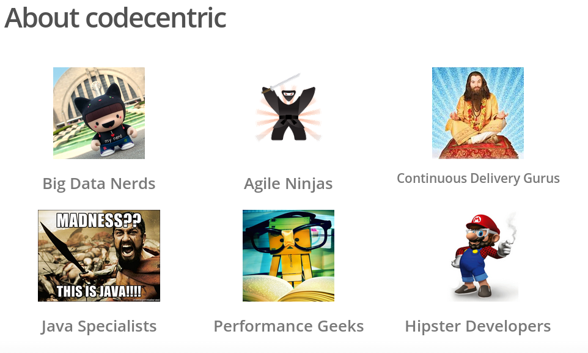
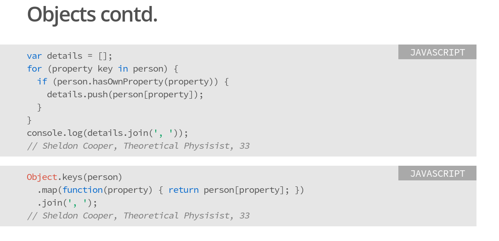
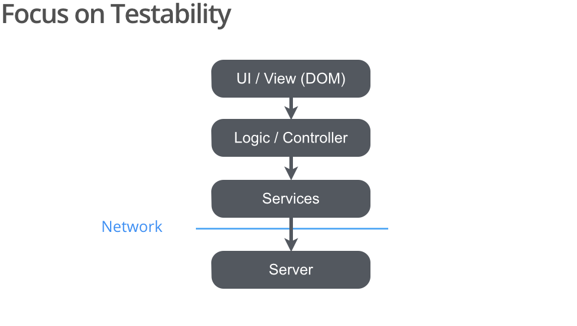

FrontEnd Assets Delivery Pipeline
a codecentric AG presenation
If you are reading this, then you are probably here because one of the speakers has given you this URI. Should you be interested in a workshop, please contact our training team (workshop is available in German and English).
Slides
-

Talk: "Continuous Delivery for the Frontend"
Who we are, what we do and what the presentation is about. Talk @ Continuous Lifecycle 2014
-

About the Project Staffing WebApp
Quick presentation of the demo project that is used throughout the presentation.
-

JavaScript Basics
Introduction to JavaScript, basic features and common pitfalls. Start here, if you are new to JavaScript or want to learn more about the language. These slides are part of the AngularJS Workshop from @BenRipkens and @MLex
-

AngularJS Basics
The project-staffing application is based on AngularJS. These slides are part of the AngularJS Workshop from @BenRipkens and @MLex
All slides are created with: https://code.google.com/p/io-2012-slides/
Source Code
All the project's sources are available through a GitHub repository under marcelbirkner/project-staffing.
Speaker
-
Marcel Birkner
-
 Bastian Krol
Bastian Krol